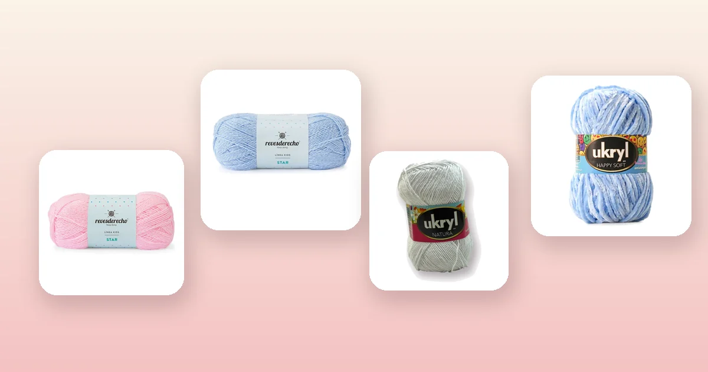

Proyectos de crochet
Cómo tejer una cobija de bebé a crochet paso a paso
Una cobija de bebé tejida a crochet es uno de los regalos más especiales que puedes hacer: suave, abrigada y hecha con tus propias manos. En esta guía te enseñamos la tabla de medidas según la edad, el paso a paso completo, los mejores puntos para cobijas de bebé, cuántos ovillos comprar y cómo elegir una lana segura e hipoalergénica.

Materiales y lanas seguras para bebé
La lana para una cobija de bebé debe cumplir tres condiciones: ser suave al tacto, hipoalergénica y lavable a máquina. Los bebés tienen la piel sensible y la cobija pasará muchas veces por el lavarropas, así que necesitas un hilo que resista sin deformarse ni perder suavidad.
- Ganchillo de 4 a 6 mm según el grosor del hilo. La mayoría de las lanas de bebé se trabajan con ganchillo de 5 mm para un tejido suave y con buena caída. Si no sabes cuál elegir, revisa la guía de qué aguja o ganchillo usar.
- Aguja lanera de punta roma para esconder hebras sin romper las fibras.
- Tijeras y cinta métrica.
Estas son las mejores lanas del catálogo para cobijas de bebé:
- Lana extra suave para bebé: Lana Star Revesderecho Rosa Bebé o Lana Star Revesderecho Celeste, 100% acrílico con 200 m por ovillo. Es la lana clásica para proyectos de bebé: muy suave, no pica y viene en colores pasteles perfectos. Toda la línea está en lanas Revesderecho.
- Mezcla algodón-acrílico hipoalergénica: Ukryl Natura Blanco o Ukryl Natura Celeste, 50% algodón y 50% acrílico con 200 m por ovillo. El algodón le da frescura para las estaciones cálidas y el acrílico la hace lavable. Consulta toda la línea en lana Ukryl.
- Lana chenille ultra suave: Lana Chenille Celeste o Lana Chenille Rosado, con 90 m por ovillo. El tacto es aterciopelado, ideal para cobijas de cuna donde la suavidad es lo más importante.
- Lana de grosor medio, versátil: Lana Star Revesderecho Amarillo Pastel, 100% acrílico con 200 m. Un color neutro que funciona para cualquier bebé.
Tabla de medidas según la edad
Una cobija de bebé no tiene una sola talla: depende del uso y la edad. Esta tabla te orienta para elegir el ancho y largo ideal.
| Uso | Ancho | Largo | Ovillos aprox. (200 m) |
|---|---|---|---|
| Recién nacido / coche | 70 cm | 90 cm | 3 – 4 |
| Cuna estándar | 80 cm | 100 cm | 4 – 5 |
| Cuna + coche (versátil) | 90 cm | 110 cm | 5 – 6 |
| Cobija de paseo grande | 100 cm | 120 cm | 6 – 7 |
Si es tu primera cobija de bebé, te recomendamos la medida de cuna estándar (80 × 100 cm): es la más útil y se teje en un tiempo razonable. Para calcular la cantidad exacta de lana según el punto que elijas, revisa la guía de cuánta lana necesito para tejer.
Los mejores puntos para una cobija de bebé
No todos los puntos son iguales para una cobija de bebé. Los agujeros grandes pueden atrapar los deditos, así que conviene elegir un punto tupido o con calados pequeños.
- Punto alto (double crochet): el más usado para cobijas. Avanza rápido, tiene buena caída y queda parejo. Es perfecto para principiantes.
- Medio punto alto (half double crochet): un poco más compacto que el punto alto. Queda más abrigado y también es sencillo.
- Punto musgo (moss stitch / linen stitch): alterna cadena y punto bajo creando una textura hermosa tipo lino. Tupido y con textura sin agujeros grandes.
- Punto estrella (star stitch): crea un patrón de estrellas en relieve, muy decorativo. Un poco más avanzado pero con un resultado espectacular.
- Punto granny en filas: usa la estructura del granny square pero tejido en filas rectas. Queda con textura y se trabaja rápido.
Si estás empezando, te recomendamos el punto alto o el medio punto alto. Para repasar los puntos básicos antes de empezar, revisa la guía de puntos básicos de crochet.
La muestra de tensión
La muestra es especialmente importante en una cobija de bebé, porque necesitas que la medida final sea la correcta. Teje un cuadrado de al menos 12 × 12 cm con el ganchillo y la lana elegidos.
Ejemplo con Lana Star Rosa Bebé y ganchillo de 5 mm en punto alto:
- 14 puntos altos = 10 cm de ancho.
- 8 filas de punto alto = 10 cm de alto.
Si tu muestra da más puntos por 10 cm, prueba con un ganchillo más grande; si da menos, baja un número.
Paso a paso: teje el cuerpo de la cobija
Con la muestra lista, calcula cuántas cadenas necesitas de base. Para una cobija de 80 cm de ancho con 14 puntos altos cada 10 cm:
80 ÷ 10 × 14 = 112 cadenas + 2 de subida = 114 cadenas de base.
- Cadena base: haz 114 cadenas (o las que calcules según tu muestra). No aprietes las cadenas, la cobija debe tener caída.
- Fila 1: un punto alto en la tercera cadena desde el ganchillo. Teje un punto alto en cada cadena hasta el final. Al terminar, deberías tener 112 puntos altos.
- Fila 2 en adelante: cadena 2, gira, un punto alto en cada punto de la fila anterior. Repite hasta que la cobija mida 100 cm de largo (o el largo deseado).
Si quieres hacer rayas de colores, cambia el color al inicio de una fila cada 4 o 6 filas. Para una cobija en dos colores, alterna bloques de Lana Star Rosa Bebé y Lana Star Blanco.
El borde decorativo
El borde le da un acabado prolijo y es la firma de tu cobija. Para una cobija de bebé, el borde debe ser suave y sin partes rígidas.
- Borde de punto bajo: la opción más sencilla. Teje 2 vueltas de punto bajo alrededor de toda la cobija, con 3 puntos bajos en cada esquina para que no se frunza.
- Borde de conchitas (shell border): en la segunda vuelta, alterna 1 punto bajo con 5 puntos altos en el mismo punto cada 2 puntos. Crea un borde ondulado muy delicado.
- Borde de punto cangrejo: punto bajo en dirección contraria (de izquierda a derecha). Deja un borde enrollado y firme que evita que se enrosque la cobija.
El borde de conchitas es el más popular para cobijas de bebé porque queda suave y decorativo. Si prefieres algo más simple, el punto bajo en dos vueltas es perfecto.
Acabado, bloqueo y lavado
Un buen acabado marca la diferencia entre una cobija amateur y una que parece de tienda.
- Remata las hebras: con la aguja lanera, esconde cada hebra suelta tejiendo a lo largo de los puntos durante al menos 5 cm. Corta el excedente. En una cobija de bebé es importante que no queden hebras sueltas.
- Bloquea la cobija: humedécela con agua tibia (sin retorcerla), estírala sobre una superficie plana (una cama con toallas) y fíjala con alfileres hasta que seque. Esto empareja los puntos y le da la forma final.
- Lávala antes de regalar: un primer lavado suaviza las fibras y elimina cualquier residuo. Usa un detergente suave para ropa de bebé. Para más consejos de cuidado, revisa la guía de cómo lavar y cuidar la lana.
Cuántos ovillos necesitas
La cantidad depende de la medida de la cobija, el punto y el grosor del hilo. Esta tabla te da una estimación para una cobija de cuna estándar (80 × 100 cm) en punto alto.
| Lana | Metros por ovillo | Ovillos para 80 × 100 cm |
|---|---|---|
| Lana Star Revesderecho | 200 m | 4 – 5 |
| Ukryl Natura | 200 m | 4 – 5 |
| Lana Chenille | 90 m | 7 – 8 |
| Lana Ukryl Etiqueta Dorada | 200 m | 4 – 5 |
Compra siempre un ovillo extra: es mejor que sobre y no que te falte lana a mitad de proyecto. Si haces rayas de varios colores, calcula la proporción de cada color.
Variaciones: cobija de granny, rayas y relieve
- Cobija de granny squares: teje cuadrados individuales de 12 a 15 cm y únelos con punto bajo o punto raso. Aprende la técnica en la guía del granny square. Es ideal para usar restos de lana de varios colores.
- Cobija de rayas: alterna 2 o 3 colores cada 4 filas. Lana Star tiene tonos pastel perfectos: Rosa Bebé, Celeste, Amarillo Pastel y Blanco.
- Cobija de relieve (front post / back post): usa puntos altos en relieve adelante y atrás para crear un patrón tipo tejido de canasta. Queda gruesa y muy abrigada para invierno.
- Cobija de esquina a esquina (C2C): se empieza desde una esquina y se teje en diagonal aumentando y luego disminuyendo. Permite hacer dibujos geométricos con cambios de color.
Errores comunes al tejer cobijas de bebé
- Elegir lana que pica. Siempre prueba la lana contra tu mejilla antes de usarla para un bebé. El acrílico suave o la mezcla algodón-acrílico son lo más seguro.
- Dejar agujeros grandes. Si tu tejido tiene huecos donde el bebé puede meter los dedos, sube a un ganchillo más pequeño o cambia a un punto más tupido.
- No contar los puntos. Una cobija trapezoidal es el error más común. Cuenta los puntos al final de cada fila hasta que la tensión sea automática.
- Hebras sueltas. En una cobija de bebé, las hebras largas son un riesgo. Escóndelas bien con la aguja lanera y recorta el excedente al ras.
- No lavar antes de regalar. La lana nueva puede tener residuos del proceso de fabricación. Un lavado con detergente suave la deja lista para la piel del bebé.